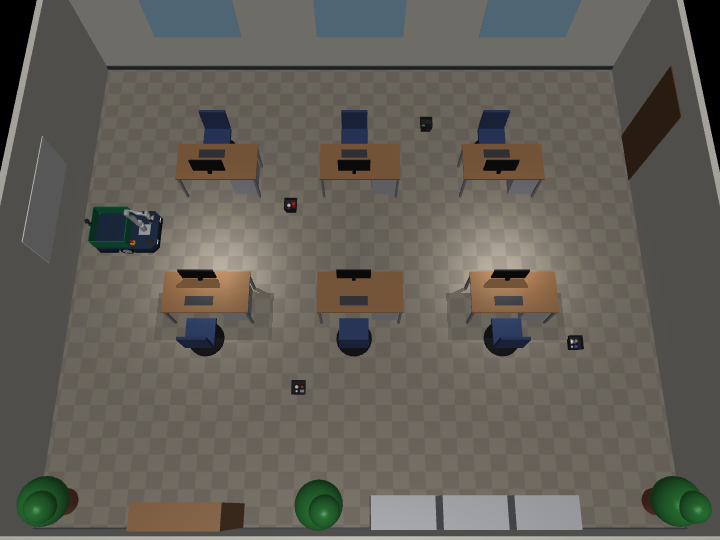

Simulación en MuJoCo y Genesis con base de tracción diferencial y brazo Kinova Gen3 de 7 grados de libertad
Juan Esteban Gómez · Jorge Giraldo · Josué Ramírez · Fundamentos de Robótica

Vaciar las papeleras de una oficina es una tarea repetitiva que hoy se hace a mano, papelera por papelera.
ROBOT-REC recorre los pasillos, toma cada papelera por el aro, la vacía en su tolva y la devuelve a su sitio.
2Tracción diferencial de 110 × 72 cm y 35 kg, con 2 ruedas motrices y 4 locas.
Kinova Gen3 de 7 grados de libertad montado sobre la cubierta.
Paralela, de dedos acoplados y 120 N por dedo, con almohadillas de caucho.
Unos 95 L sobre la cubierta, detrás del brazo.
Ciclo de trabajo: llega a la papelera, la toma por el aro, la vacía en la tolva y la devuelve a su sitio.
3Recorre los pasillos por puntos de paso.
Pasa con la papelera a su izquierda y se detiene a su lado.
El Gen3 pinza el aro de la pared que mira al carro.
La lleva en arco sobre la tolva y la invierte.
La deja vacía y de pie en su sitio.
2 ruedas motrices, 4 ruedas locas pasivas, 7 rotativas en el Gen3 y 2 dedos prismáticos acoplados por piñón y cremallera.
Control de posición en el brazo (hasta 105 N·m en J1 a J4 y 52 N·m en J5 a J7) y en los dedos (120 N). Control de velocidad en las ruedas.
IMU de 9 ejes en el chasis, cámara RealSense en la muñeca, banda-parachoques con sensores ToF y LiDAR de 360°.
Ruedas de 12 cm a unos 0,32 m/s. Al girar en el sitio barre un círculo de unos 0,66 m de radio. Baterías LiFePO4 adelante como contrapeso del brazo.
| Papelera | Ubicación | Posición (m) | Basura |
|---|---|---|---|
| 1 | Pasillo central, entre escritorios | (3,75; 5,45) | Bola de papel, lata y caja |
| 2 | Junto al último escritorio | (8,60; 2,90) | 2 bolas de papel, caja y lata |
| 3 | Detrás de la fila norte | (6,25; 7,15) | Caja y lata llena (350 g) |
| 4 | Pasillo sur, junto a las sillas | (4,00; 2,15) | 2 bolas de papel y 2 cajas |
Oficina de 10 × 8,5 m con escritorios, sillas y plantas. Se genera desde oficina.py: TAREAS, BASURA e INICIO definen papeleras, residuos y pose inicial.
| Herramienta | Para qué se usó |
|---|---|
| deployed_codeMuJoCo | Simulador de física y cinemática del robot (también la IK cuando corre en Genesis) |
| memoryGenesis y PyTorch | Simulador alterno en GPU NVIDIA con CUDA |
| codePython 3 | Navegación, rutina del brazo, cinemática inversa y autoprueba |
| data_objectXML (MJCF) | Robot, papelera y escena en robot_rec.xml, papelera.xml y escena.xml |
| calculateNumPy | Álgebra de la cinemática y de las trayectorias |
| view_in_arMuJoCo Menagerie | Mallas, inercias y ganancias del Kinova Gen3 (licencia BSD-3) |
robot_rec.xmlCuerpo con pasos de rueda, ruedas locas con giro libre desplazado 25 mm, paro de emergencia y LiDAR.
Sobre una placa de montaje de 12 mm. Ganancias de Menagerie: actuadores grandes en J1 a J4 y pequeños en J5 a J7.
Almohadillas de caucho de 12 mm que cierran hasta pinzar un aro de 1 cm. La palma hace de tope.
Troncopiramidal: base de 17 cm, boca de 21 cm y 20 cm de alto, con aro superior rígido y reborde.
La escena une piso, oficina y robot; oficina.xml se regenera en cada ejecución.
simular.py# mínimos cuadrados amortiguados, λ = 1e-4 e = [p* − p ; ½ Σ rᵢ × rᵢ*] J⁺ = Jᵀ (J Jᵀ + λI)⁻¹ # 7 DOF: la redundancia tiende al reposo Δq = J⁺ e + 0,05 (I − J⁺J)(q_reposo − q) # paso limitado a 0,2 rad, tolerancia 0,2 mm
El espacio nulo mantiene el codo arriba. Si no converge, reintenta con la cintura girada y avisa del salto de postura.
Baja sobre el aro con un dedo por dentro y otro por fuera, cierra y sube en vertical.
Gira en arco alrededor de la base del brazo hasta la tolva, voltea 180° y endereza despacio.
Vuelve en arco, centra la base sobre su sitio, afloja, baja 12 mm y recién entonces abre.
Si el aro se desliza fuera de la pinza, abandona esa papelera y sigue con la siguiente.
10| Comando | Qué hace |
|---|---|
pip install mujoco numpy | Instala lo necesario para MuJoCo |
pip install torch genesis-world | Solo con GPU NVIDIA con CUDA, para Genesis |
python simular.py | Genesis si hay CUDA; si no, MuJoCo |
--motor mujoco|genesis | Fuerza uno de los dos simuladores |
--sin-ventana | Corre sin visor, como prueba rápida |
| Componente | Referencia | Cant. | Bajo (COP) | Alto (COP) |
|---|---|---|---|---|
| precision_manufacturingBrazo de 7 grados de libertad | Kinova Gen3 (alto: con frenos) | 1 | $103.860.000 | $133.980.000 |
| pinchPinza paralela | Robotiq 2F-85 | 1 | $17.310.000 | $20.170.000 |
| videocamCámara de profundidad | Intel RealSense D435 | 1 | $1.180.000 | $1.800.000 |
| radarLiDAR de 360° | RPLIDAR A2M12 | 1 | $600.000 | $1.140.000 |
| tire_repairRuedas motrices con driver y encoder | Motor de cubo de 24 V | 2 | $800.000 | $2.220.000 |
| battery_charging_fullBatería LiFePO4 | 24 V, 50 Ah | 1 | $800.000 | $3.050.000 |
| memoryComputador a bordo | NVIDIA Jetson Orin Nano Super | 1 | $860.000 | $1.900.000 |
| sensorsSensores ToF del parachoques | VL53L1X | 8 | $280.000 | $640.000 |
| buildChasis, tolva, ruedas locas, IMU, paro, cableado e integración | 15 % del resto | 1 | $18.850.000 | $24.740.000 |
| Total en pesos colombianos | $144.540.000 | $189.640.000 | ||
Precios de tiendas en línea de EE. UU. convertidos con la TRM de $3.461,92 (21 al 23 de noviembre de 2026), sin envío, arancel ni IVA de importación. La cantidad de sensores ToF es un supuesto. El brazo es más del 70 % del costo. Referencia: una base diferencial comercial lista, la AgileX Tracer, ronda los $22,5 millones.
13